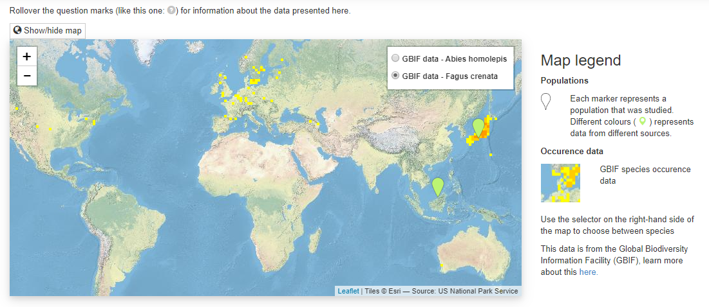
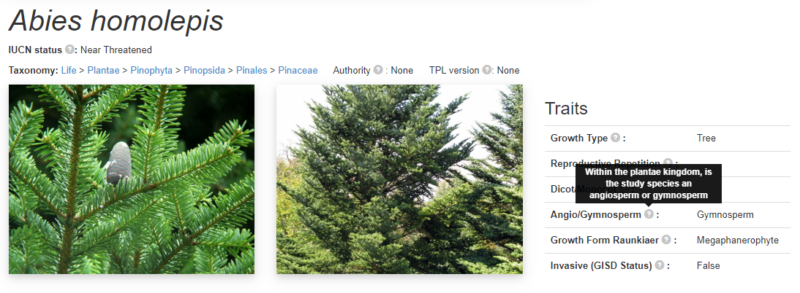
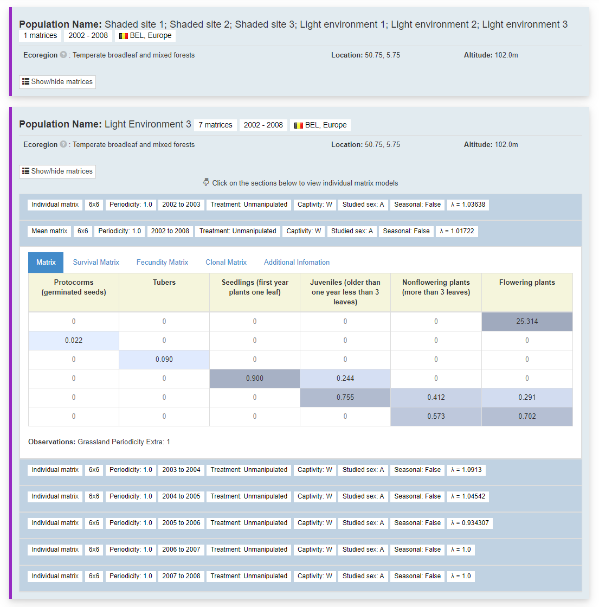
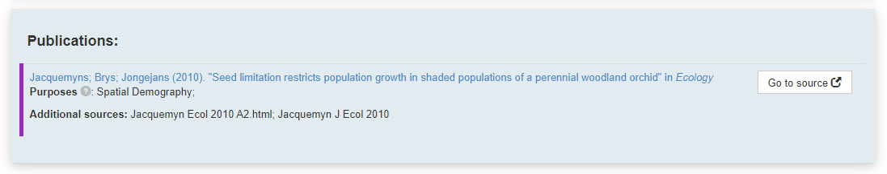

COMPADRE Plant Matrix Database Front-end Development
About the Project
The Database
COMPADRE and COMPADRE contain thousands of plant and animal species with tens of thousands of matrix population models and ancillary information. These databases are under continuous development, and more data are released periodically. COMPADRE and COMPADRE data are obtained from (mostly) published literature. The data was previously made available stored in an R object which made it hard to explore, visualise and contextualise the data. The ‘back-end’ of the database was a very unwieldy excel sheet that was known to have data input issues leading to errors that had to be checked using custom written R scripts.
I got involved in this project during the final year of my undergraduate degree doing my dissertation project. I had identified the lack of data exploration as a problem and had built a rather pokey data explorer which was built using an R script that took the R object and generated static web pages for all of the species. You can find this proto-prototype here.
This then led to a 10-week summer internship where I got involved with the database project that Dave Hodgson’s research group was working on. I worked with Francesca Sargant (primary database developer) and Danny Buss to develop a front-end to the database.
Unfortunately the project never quite got into production and to a state that was sufficiently bug free to be able to reliably use as the primary data repository. When further funding was won via an NSF grant to develop the COMPADRE database, the database web application we built was treated as a prototype for a new version of the database. Many of the design features outlined here were incorporated into the version which is live here.
Technology used:
- Flask: a python-based web app framework
- Jinja2 templating engine
- Bootstrap 4
- Leaflet for the maps
- JS and CSS
- OAuth2 for logging in
- APIs to GBIF, wikipedia
All the code is available on GitHub: demography database GitHub repository
Main Data Viewer Page
Example pages (all links have been disabled):
Nakashizuka (1991), Abies homolepis and Fagus crenata, 2 populations.
Dynamic URL Building
There are different views are reflected in the dynamic URL building. For example, if I wanted to look at all the information about a species with the internal database ID of 20 the URL would be:
/species=153/publications=all
Whereas if a publication contained data about multiple species I might want to view a page like so:
/species=all/publications=34
If you wanted to compare the data available for multiple species or multiple publications you could build URLs like so:
/species=153+154/publications=all
/species=all/publications=3+4
In theory, you could go to this page:
/species=all/publications=all
but in practice, it would take a long time to load and it wouldn’t be very useful. In reality, the user wasn’t building these urls manually but they were used to provide different pages depending on how you were exploring the data. For example, if you were using the taxonomic explorer, you’d want to see all the data available for a particular species and wouldn’t want to restrict it to a particular publication. And vice versa for searching by publication. The next sections outline the layout of the page and how they aid the contextualisation of the data.
Page layout
The data is broadly structured like so: populations are attached to a species and a publication then matrices are attached to a population.
I built the page layout to reflect this structure. Here are some example page layouts:
Map

The aim of the map is to provide geographic context to the matrix populations. Are all the matrices from a very localised area or are they more evenly spatially distributed across the species range. The map is made using the leaflet javascript library and the background tiles are from ESRI. I put together a little key on the right hand side.
I added markers for the locations of the populations that matrix population models were constructed for. They are ‘spiderified’ for close-together populations and the colour corresponds to the publication so make it easy to compare if different studies did fieldwork in similar or different locations.
I also added GBIF species occurrence data via their maps API to give some idea of the species range, and where the studied population is within this range. I make sure to say where this data is from in the key. If multiple species are present then the toggle buttons in the top right hand corner of the map can be used to look at the GBIF data for different species.
Species information

For every species on this page there is a heading section for that species with the name, taxonomy and some trait data. Below this section is all the populations and matrices for this species. A couple of photos are a useful addition to the page. At the bottom of the specie section there are some buttons that take you onwards to a couple of websites such as wikipedia, genbank etc. This section features a ‘breadcrumb’ taxonomy and information about the authority and the plant list version of the taxonomy. Each different link in the taxonomy takes you to the taxonomic explorer.
This is the first section with tooltips, as described at the top of the page, if you rollover the mouse over the grey question marks then a small text box appears giving a description about the data as written in the COMPADRE protocol.
Matrices

This is where all the data sits. All the matrices per species are organised by which study population they come from. Separated by population, the generated coloured bar on the left hand side indicates ones from the same publication. Summary information for each population, name, number of matrices, years spanned, location, altitude and replication information.
Clicking the show/hide matrices button produces one row per matrix. This row includes summary information for each matrix in each row, sorted by start year. The idea is to give a summary of the different matrices that have been produced for this population.
Clicking on each of the rows opens the matrices. There are tabs to break down the matrices into all transitions, survival, fecundity and clonal matrix and any other information. Each matrix value is coloured based on their value to highlight the key transitions. Matrix headings for each life stage, as described by the author.
Publication

At the bottom of the page we have a list of all publications that are featured on this page, and they are colour coded. Clicking the title of the publication takes you to the original paper using its digital object identifier (DOI).